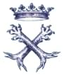

sito di propriet� della Associazione Culturale Zivido
webmaster pierino@snet.it
|  |
Casata dei marchesi |
i personaggi nella
storia
Franciscolo Brivio (20)
Dall'istromento rogato da Vittorio Panigada il d� 8 novembre 1407 si sa che abitava
allora nella parrocchia di S. Eufemia in Porta Ticinese, come vent'anni più tardi lo si
trova in altri atti abitante a Zibido nella Pieve di San Giuliano. |
Emilio Belgioioso da "Famiglie notabili milanesi", raccolte da Felice Calvi, Milano, Antonio Vallardi Ed., 1875-1885, vol.IV
sito di propriet� della Associazione Culturale Zivido
webmaster pierino@snet.it